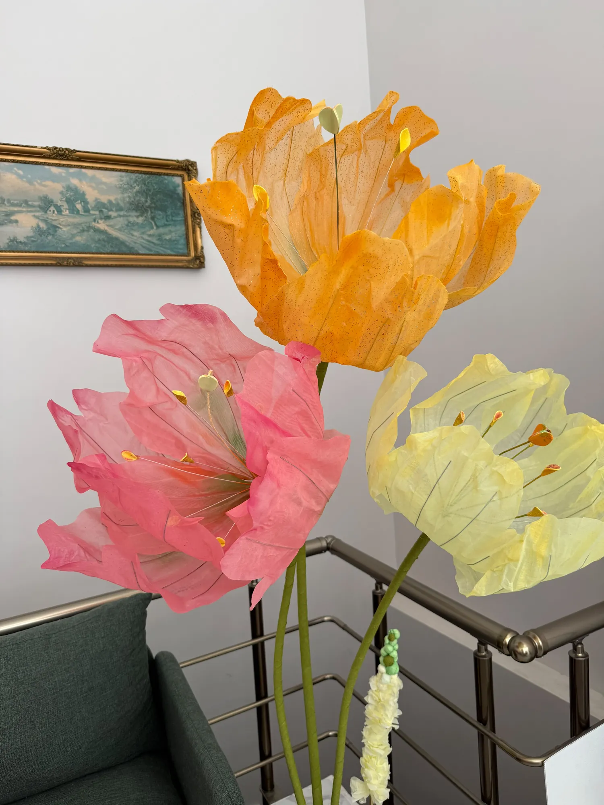
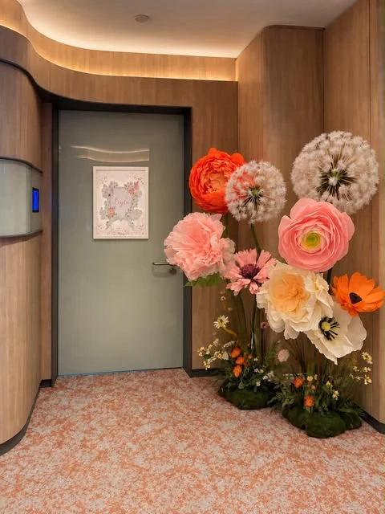
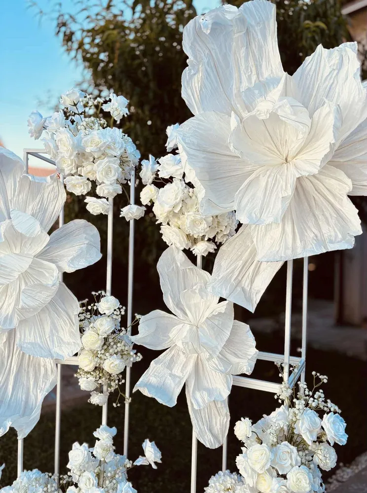
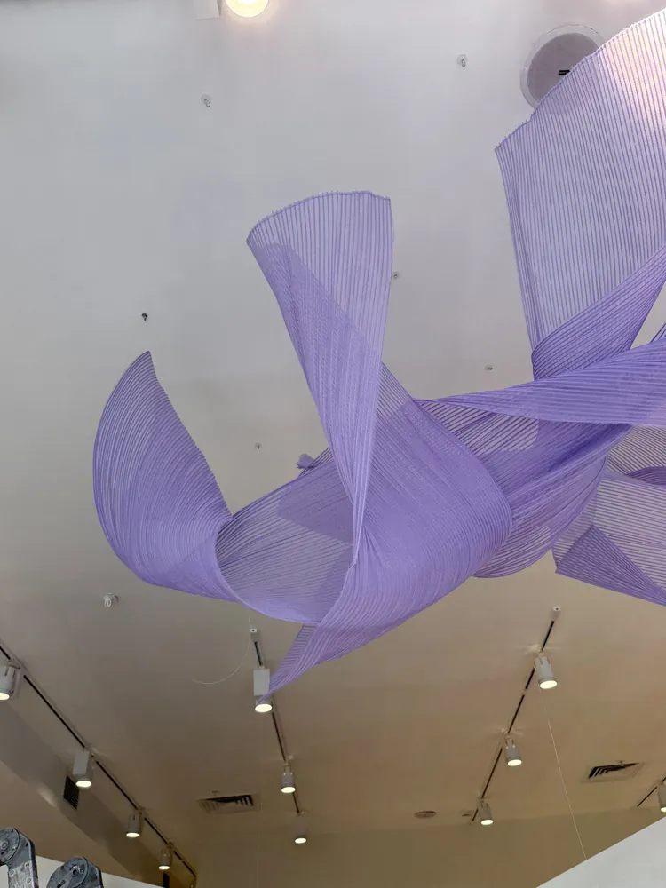
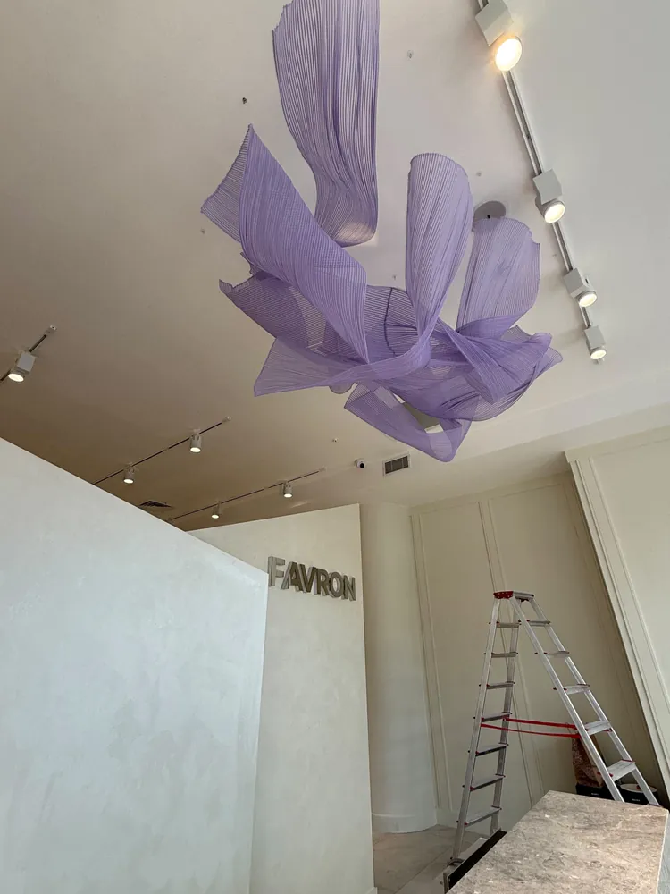

Organizasyon firmaları için
Organizasyon için dev çiçek dekoru.
Organizasyon firmaları için konsepte özel dev çiçek ve arka fon tasarımları. Elde hazırlanır, istenilen renk ve modelde, Türkiye geneli kargo.

Neden Eden Floral Art
Müşterilerinize fark yaratan detay
- 01
Konsepte özel tasarım
İstenilen renk ve modelde çalışabiliyoruz; etkinliğin paletine uyarlıyoruz.
- 02
Elde, el emeği
Tül, krapon ve organze ile tek tek hazırlanan, ışıkta ve fotoğrafta güçlü duran çiçekler.
- 03
Referans iş
@zumicoevent için doğum odası önü aranjmanı hazırladık.
- 04
Türkiye geneli kargo
Farklı şehirlerdeki etkinlikler için seçenekleri DM'den konuşalım.
Organizasyon firmaları için çiçek dekoru
Etkinlik ve organizasyon firmaları için konsepte özel dev çiçek ve flower backdrop (çiçek fon) tasarımları hazırlıyoruz. Müşterinizin teması, renk paleti ve mekânı belliyse biz çiçeği buna göre tasarlayıp atölyede elde üretiyoruz. Böylece her etkinlik için aynı hazır dekoru değil, konsepte oturan özgün bir parça sunabilirsiniz.
Hangi işlerde çalışıyoruz?
Doğum odası kapı süslemelerinden nişan ve düğün arka fonlarına, mağaza vitrinlerinden mağaza içi kumaş çiçek heykellerine kadar farklı projelerde yer aldık. @zumicoevent için doğum odası önü aranjmanı hazırladık. Yer aldığımız iş türlerine doğum odası süsü, nişan ve düğün süsleme ve vitrin tasarımı sayfalarından bakabilirsiniz.
Malzeme ve üretim
Çiçeklerimiz tül, krapon ve organzeden tek tek elde hazırlanır. Taze çiçek gibi mevsime bağlı olmadıkları için kurulumdan fotoğraf çekimine kadar etkinlik boyunca aynı görünümde kalırlar. İstenilen renk ve modelde çalışabildiğimiz için organizasyon paletinize göre farklı çiçek türleri (lilyum, şakayık, ranunculus, karahindiba ve daha fazlası) seçilebilir.
İş birliği nasıl işler?
- Konsepti, etkinlik tarihini ve istediğiniz adedi Instagram'dan (@eden.floralart) DM ile yazın.
- Konsepte özel tasarımı ve fiyatı birlikte netleştirelim.
- Çiçekler atölyede elde hazırlanır.
- Türkiye geneline gönderilir; teslim süresi en fazla 3–4 gündür, kargo ücreti paketin boyutuna göre değişir. Yerinde kurulum genellikle İstanbul ve İzmir'de yapılabiliyor; diğer şehirlere kargoyla gönderiyoruz.
Boyutlar ve tekrar kullanım
Çiçekler boyu insanı aşan ölçülerde hazırlanabilir; boyutlar tasarıma göre büyük ölçüde değişir ve her çiçek etkinliğe ve mekâna özel ölçülendirilir. Çiçekler bir sonraki etkinlikte de kullanılabilir. Krapon (kağıt) çiçekler güneşten etkilenebilir; bu yüzden doğrudan güneş ışığından uzak tutulmalıdır. Tozları hafif nemli bir bezle alınabilir. Tül ve organze gibi diğer kumaşlar güneşten zarar görmez.
Kiralama veya satın alma
Organizasyon firmaları, çiçekleri kiralama veya satın alma modeliyle edinebilir. Dev çiçek kiralama etkinlik başına ihtiyaç duyan firmalar için, satın alma ise aynı çiçekleri tekrar tekrar kullanmak isteyenler için uygundur. Model tercihinizi DM'den yazmanız yeterli.
Hazır ürünler için Shopier mağazamız, daha fazla örnek için Instagram (@eden.floralart) sayfamıza göz atabilirsiniz.
Örnek işler
Organizasyonlar için örnekler




Sıkça sorulanlar
Merak edilenler
Organizasyon firmalarıyla nasıl çalışıyorsunuz?
Kiralama veya satın alma modeliyle çalışabiliriz. Konsepti, tarihi ve adedi DM'den yazın; size özel dönüş yapalım.
Toptan veya düzenli sipariş mümkün mü?
Kiralama veya satın alma modeliyle çalışabiliriz. Düzenli iş birlikleri için DM'den konuşalım.
Çiçekleri satın alabilir miyim, kiralayabilir miyim?
İkisi de mümkün: çiçekler satın alınabilir ya da kiralanabilir.
Çiçeklerin boyutu ne kadar?
Boyutlar tasarıma göre büyük ölçüde değişir; her çiçek kişiye ve mekâna özel ölçülendirilir.
Siparişi ne kadar önce vermeliyiz?
Ne kadar erken sipariş verilirse o kadar iyi; genellikle 2–3 hafta önceden sipariş verilmesini öneriyoruz.
Renk ve model seçebilir miyiz?
Evet, istenilen renk ve modelde çalışabiliyoruz.
Türkiye geneline gönderim yapıyor musunuz?
Evet, Türkiye'nin her yerine gönderim yapıyoruz; teslim süresi en fazla 3–4 gündür. Kargo ücreti paketin boyutuna göre değişir. Yerinde kurulum genellikle İstanbul ve İzmir'de yapılabiliyor; diğer şehirlere kargoyla gönderiyoruz.
Başlayalım
Bir sonraki etkinliğinizi birlikte çiçeklendirelim.
Diğer hizmetler: Doğum odası süsüNişan & düğünVitrin tasarımı